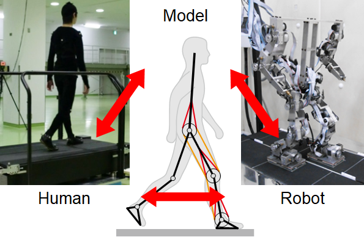

研究概要
本研究室では、多様な環境で優れた適応能力を示す生物の歩行に着目し、生物の有する優れた運動知能の解明とその応用に関する研究を行っています。 具体的には、生物の運動解析より仮説を立て、計算論的神経科学と生体力学に基づく神経・筋・骨格システムのモデル化と動力学シミュレーション、 そして力学系理論に基づく解析より、生物の優れた運動制御・運動形成メカニズムを数理的に明らかにすることを目指しています。 更には得られた知見を工学的に具現化することで、優れた運動機能を示すロボットの開発を行っています。
旧田中研のHPはこちら。
ニュース
2024.11.15
M2の篠原晃大くんがシステム・情報部門学術講演会(SSI2024)において、SSI最優秀発表賞（SSI Best Presentation Award）とSSI研究奨励賞（SSI Young Researcher Award）を受賞しました。詳細はこちら。
2024.10.1
サンパウロ大学のStephanie Chiさんが、交換留学生として研究室のメンバーに加わりました。
2024.9.20
海洋研究開発機構の荒井貴光研究員、京都大学の青柳富誌生教授、電気通信大学の舩戸徹郎准教授らとのヒトの肢間協調の制御に関する共著論文がCommunications Biologyより出版されました。詳細はこちら。（プレスリリース）
2024.8.9
9月17日(火)に、東京大学の太田順教授と安部祐一助教に講演いただく創発システム勉強会2024を予定しています。詳細はこちら。
2024.7.26
M2の西崎航紀くんがBioengineering Colloquium 2024において、Best Presenter Award (Master course)を受賞しました。詳細はこちら。
2024.6.19
FrontierLabサマープログラムで、カリフォルニア大学サンディエゴ校のAlexander Langeさんが、研究室のメンバーに加わりました。
2024.6.3
安達真永さん（三菱電機株式会社リサーチアソシエイト）に研究室の招へい研究員に就任いただきました。
2024.5.27
FrontierLab Miniプログラムで、トロント大学のMai Lyさんが、研究室のメンバーに加わりました。
2024.5.21
6月8日(土)に、青井伸也教授が学士会第55回関西茶話会で講演します。詳細はこちら。
2024.3.6
3月13日(水)に、Polytechnic University of MadridのCecilia García Cena准教授による機能創成セミナーを予定しています。詳細はこちら。
2024.1.9
安部祐一助教が特定非営利活動法人国際レスキューシステム研究機構より、第19回竸基弘賞学術業績賞を受賞しました。詳細はこちら。
2023.12.22
安部祐一助教の流体噴射型浮上索状ロボット（空飛ぶ消火ホース）に関する論文がFrontiers in Robotics and AIより出版されました。秋田県立大学の山内悠特任助教、東北大学の昆陽雅司准教授、多田隈建二郎准教授、田所諭教授との共著論文です。詳細はこちら。
2023.12.5
青井伸也教授が令和5年度基礎工学部談話会において講演しました。
2023.11.22
D3の岡本耕太くん（京都大学からの指導委託）の受動歩行のフラクタルベイスンに関する論文がNonlinear Dynamicsより出版されました。京都大学の國府寛司教授、明石望洋助教、岡山大学の大林一平教授、東京大学の中嶋浩平准教授との共著論文です。詳細はこちら。
2023.11.12
安部祐一助教がシステム・情報部門学術講演会(SSI2023)において、SSI最優秀論文賞（SSI Best Paper Award）を受賞しました。詳細はこちら。
2023.10.2
FrontierLabプログラムで、カリフォルニア大学バークレー校のAlvin Soさんが、研究室のメンバーに加わりました。
2023.9.30
安部祐一助教の空気噴射型索状ロボットに関する論文がJournal of Intelligent & Robotic Systemsより出版されました。秋田県立大学の山内悠特任助教、東北大学の昆陽雅司准教授、多田隈建二郎准教授、圓山重直名誉教授、田所諭教授との共著論文です。詳細はこちら。
2023.9.22
安部祐一助教の流体噴射型浮上索状ロボットに関する論文がIEEE Robotics and Automation Lettersより出版されました。秋田県立大学の山内悠特任助教、東北大学の昆陽雅司准教授、多田隈建二郎准教授、田所諭教授との共著論文です。詳細はこちら。
2023.9.19
小林洋准教授がJSTさきがけICT基盤強化領域に採択されました。詳細はこちら。
2023.9.7
大津創学振PD研究員のヒトのシンプルモデルに関する論文がScientific Reportsより出版されました。東京都立大学の長谷和徳教授、埼玉県立大学の小栢進也准教授との共著論文です。詳細はこちら。
2023.6.20
FrontierLabサマープログラムで、カリフォルニア大学サンディエゴ校のJoshua Tesoroさんが、研究室のメンバーに加わりました。
2023.5.29
2023.5.22
M2の伊庭遼くん（京都大学からの指導委託）が第67回システム制御情報学会研究発表講演会(SCI'23)において、SCI学生発表賞を受賞しました。詳細はこちら。
2023.5.8
6月5日(月)に、Drexel University College of MedicineのSimon M. Danner助教、Shravan Tata Ramalingasetty研究員、Andrew B. Lockhartさんの3名による機能創成セミナーを予定しています。詳細はこちら。
2023.5.1
和田直己先生（山口大学名誉教授）に研究室の招へい教授に就任いただきました。
2023.4.15
2023.4.3
日本学術振興会特別研究員PDの大津創さんが、研究室のメンバーに加わりました。
2023.2.28
D2の岡本耕太くん（京都大学からの指導委託）が2022年度計測自動制御学会学術奨励賞・研究奨励賞を受賞しました。詳細はこちら。
2022.12.21
青井伸也教授がジョージア工科大学の理学部において講演しました。詳細はこちら。
2022.9.8
ホームページを開設しました。
2022.9.1
安部祐一助教が着任されました。
2022.7.13
青井伸也教授が山口大学の共同獣医学部において講演しました。詳細はこちら。
2022.6.22
D2の岡本耕太くん（京都大学からの指導委託）のヒトのシンプルモデルに関する論文がFrontiers in Neural
Circuitsより出版されました。京都大学の國府寛司教授、岡山大学の大林一平教授との共著論文です。詳細はこちら。
2022.6.3
安達真永特任研究員の四脚動物の数理モデルに関する論文がFrontiers in Bioengineering and
Biotechnologyより出版されました。京都大学の松野文俊教授、名古屋工業大学の上村知也助教との共著論文です。詳細はこちら。
2022.5.19
D2の岡本耕太くん（京都大学からの指導委託）が第66回システム制御情報学会研究発表講演会(SCI'22)において、SCI学生発表賞を受賞しました。詳細はこちら。
2022.5.10
多脚ロボットに関する論文がIEEE Transactions on Roboticsより出版されました。詳細はこちら。
2022.4.14
名古屋工業大学の上村知也助教、山口大学の和田直己教授、日暮泰男助教、京都大学の松野文俊教授とのチーターの数理モデルに関する共著論文がFrontiers in Bioengineering and
Biotechnologyより出版されました。詳細はこちら。
2022.4.8
M2の金勇紀くん（京都大学からの指導委託）のネコの神経筋骨格モデルに関する論文がFrontiers in Bioengineering and
Biotechnologyより出版されました。米国・ドレクセル大学のIlya Rybak教授の研究グループ、東京大学の柳原大教授、獨協医科大学の藤木聡一朗講師との共著論文です。詳細はこちら。
2022.4.1
研究室が発足しました。